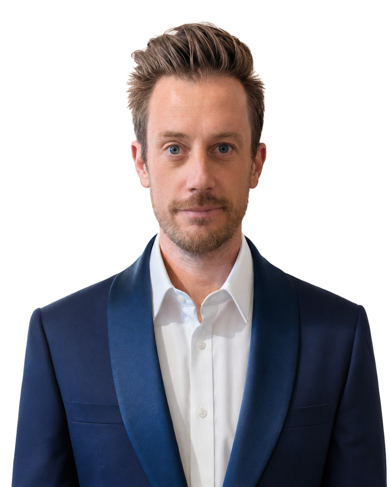

S
I
M
O
A
L
B
E
R
T
I
SIMO
Alberti
Home
Work
Projects
Contact

Scroll
AMBITIOUS
PRODUCT
DESIGN
ENGINEERING
LEADER,
FUELED
BY
OPTIMISM,
DRIVEN
BY
PASSION,
WITH
A
HEALTHY
DISREGARD
FOR
THE
IMPOSSIBLE.
Work
in
progress.